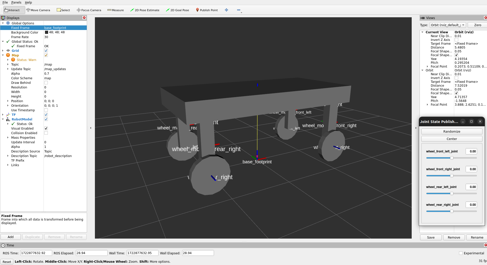
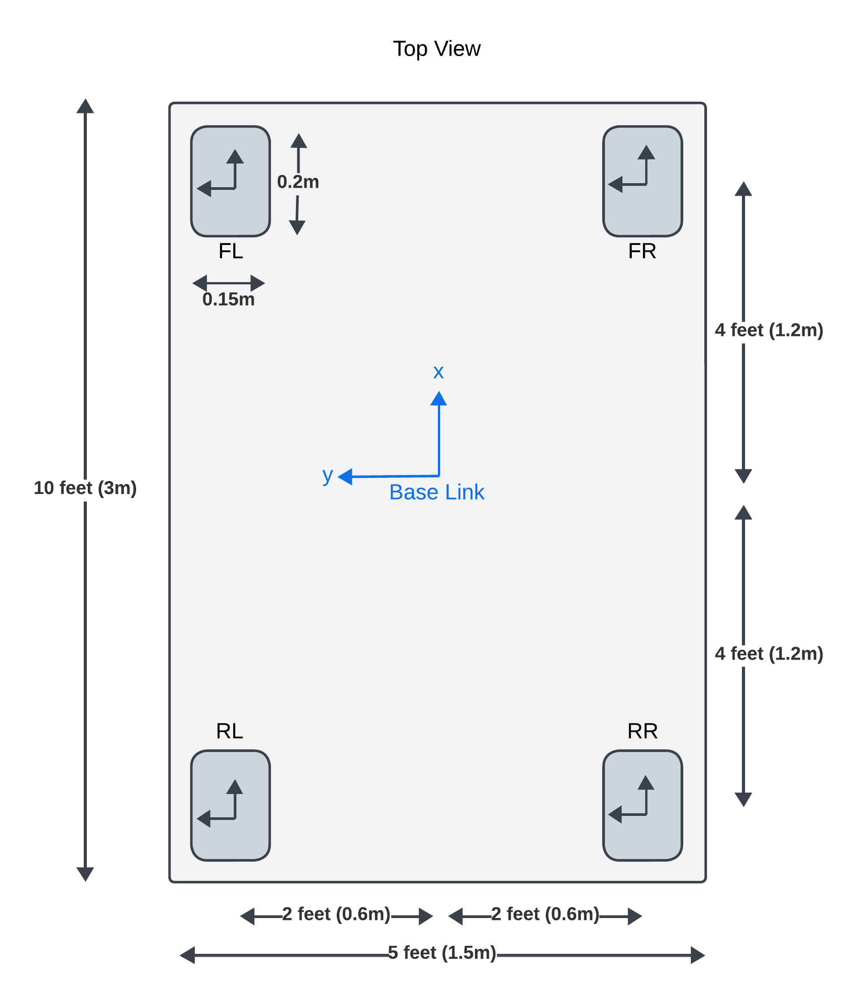
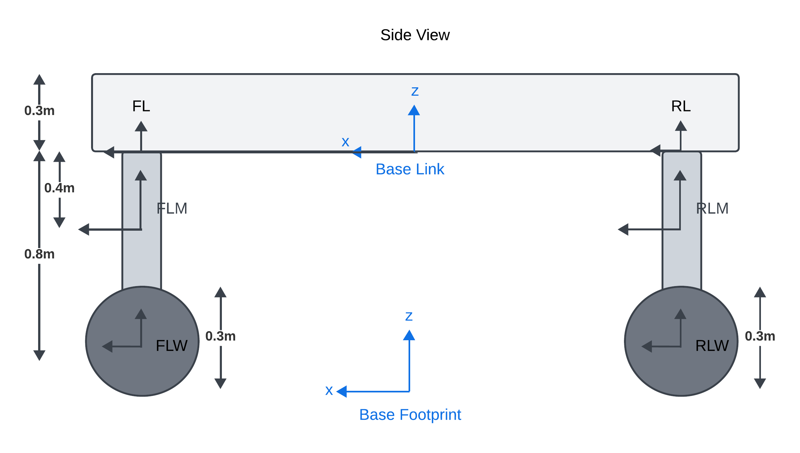
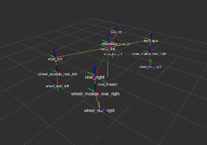

Table of contents
Acorn URDF Differential Drive

The first version of acorn in simulation will be a simple differential drive robot with 4 actuated wheels.
TF2 Frames and Links
 
The robot will have the following frames and links:
- base_footprint : Parent frame for all other frames and also needed by Nav2
- base_link : Base center of robot chassis
- Reference Frames
- front_left
- front_right
- rear_left
- rear_right
- Wheel Module Frames
- wheel_module_front_left
- wheel_module_front_right
- wheel_module_rear_left
- wheel_module_rear_right
- Wheel Frames
- wheel_front_left
- wheel_front_right
- wheel_rear_left
- wheel_rear_right
XACRO Macros and URDF
- Similar to the Baseline URDF, we will use XACRO macros to define the wheel modules and wheels.
- The chassis, sensors, and GPS will be defined in the main URDF file.
Wheel Module XACRO
<?xml version="1.0" ?>
<robot xmlns:xacro="http://www.ros.org/wiki/xacro">
<include filename="color_macro.xacro"/>
<include filename="inertia_macro.xacro"/>
<!--
A macro to create a wheel module (including links and joints)
NOTE: A joint is just a relationship between two links (two frames)
Parameters:
- parent_name: Name of parent link, e.g. left_rear
- mass: Mass of the wheel in kilogram
- radius: Radius of the wheel in meters
- width: Width of the wheel in meters
- module_len: Height of wheel module in meters
- cx, cy, cz = The position of center of wheel module w.r.t parent frame
- side: left or right
-->
<xacro:macro name="wheel_assembly" params="parent_name mass radius
width module_len module_width_x module_width_y cx cy cz side">
<!--
Firstly create a link for the wheel module
Then create a joint to connect the wheel module to the parent link
Then create a link for wheel
Then create a joint to connect the wheel to the wheel module
-->
<joint name="wheel_module_${parent_name}_joint" type="fixed">
<parent link="${parent_name}"/>
<child link="wheel_module_${parent_name}"/>
<!-- This origin is where child link is placed w.r.t parent link -->
<origin xyz="${cx} ${cy} ${cz}" rpy="0 0 0"/>
</joint>
<!-- Define the wheel module link -->
<link name="wheel_module_${parent_name}">
<visual>
<origin xyz="0 0 0"/>
<geometry>
<box size="${module_width_x} ${module_width_y} ${module_len}"/>
</geometry>
<material name="grey"/>
</visual>
</link>
<joint name="wheel_${parent_name}_joint" type="continuous">
<parent link="wheel_module_${parent_name}"/>
<child link="wheel_${parent_name}"/>
<origin xyz="0 ${wheel_position_y} ${-module_len/2.0}" rpy="${wheel_pitch} 0 0"/>
<axis xyz="0 0 1"/>
</joint>
<link name="wheel_${parent_name}">
</link>
</xacro:macro>
</robot>
Main URDF
<?xml version="1.0"?>
<robot xmlns:xacro="http://www.ros.org/wiki/xacro" name="robot">
<!-- <xacro:include filename="robot_core.xacro" /> -->
<!-- REFER TO IMAGES FOLDER FOR VISUAL REPRESENTATION OF THE ROBOT -->
<xacro:include filename="wheel_module_macro.xacro" />
<xacro:include filename="color_macro.xacro" />
<xacro:include filename="inertia_macro.xacro" />
<!-- CONSTANTS -->
<xacro:property name="PI" value="3.1415926535897931"/>
<!-- <xacro:arg name="is_simulation" default="true" /> -->
<!-- Chassis dimensions -->
<xacro:property name="chassis_mass" value="30.0"/> <!-- kilograms -->
<xacro:property name="chassis_length" value="3"/> <!-- meters -->
<xacro:property name="chassis_width" value="1.5"/>
<xacro:property name="chassis_height" value="0.3"/>
<!-- Wheel Module dimensions -->
<xacro:property name="base_to_module_x" value="1.2"/> <!-- meters -->
<xacro:property name="base_to_module_y" value="0.6"/>
<xacro:property name="module_width_x" value="0.2"/>
<xacro:property name="module_width_y" value="0.15"/>
<xacro:property name="module_height" value="0.8"/>
<!-- Wheel dimensions -->
<xacro:property name="wheel_mass" value="1.0"/> <!-- kilograms -->
<xacro:property name="wheel_radius" value="0.3"/> <!-- meters -->
<xacro:property name="wheel_width" value="0.1"/>
<!-- Define a base links for the robot. base_link and base_footprint needed for Nav2 -->
<link name="base_footprint"/>
<joint name="base_joint" type="fixed">
<parent link="base_footprint"/>
<child link="base_link"/>
<origin xyz="0 0 ${module_height + wheel_radius}" rpy="0 0 0"/>
</joint>
<link name="base_link"/>
<!-- Define a chassis link for the robot -->
<joint name="chassis_joint" type="fixed">
<parent link="base_link"/>
<child link="chassis"/>
<!-- Place the chassis at half of chassis height above the base link -->
<origin xyz="0 0 ${chassis_height/2.0}" rpy="0 0 0"/>
</joint>
<link name="chassis">
</link>
<!-- 4 static links which will be used to connect the wheel modules to the base link -->
<link name="front_left">
</link>
<link name="front_right">
</link>
<link name="rear_left">
</link>
<link name="rear_right">
</link>
<!-- Define the wheel modules -->
<!-- params="parent_name mass radius width module_len module_width_x ..." -->
<!-- NOTE: cx,cy,cz are the coordinates of the child link's center w.r.t the parent -->
<xacro:wheel_assembly parent_name="front_left" mass="${wheel_mass}"
radius="${wheel_radius}" width="${wheel_width}" module_len="${module_height}"
module_width_x="${module_width_x}" module_width_y="${module_width_y}"
cx="0" cy="0" cz="${-module_height/2.0}" side="left"/>
<xacro:wheel_assembly parent_name="front_right" mass="${wheel_mass}"
radius="${wheel_radius}" width="${wheel_width}" module_len="${module_height}"
module_width_x="${module_width_x}" module_width_y="${module_width_y}"]
cx="0" cy="0" cz="${-module_height/2.0}" side="right"/>
</robot>
Robot State Publisher and Joint State Publisher
- The robot state publisher is used to publish all static (fixed) joints in URDF as TF2 frames
- Joint State Publisher is used to publish tf2 frames between non-fixed joints (wheels in this case)
RViz Visualization
